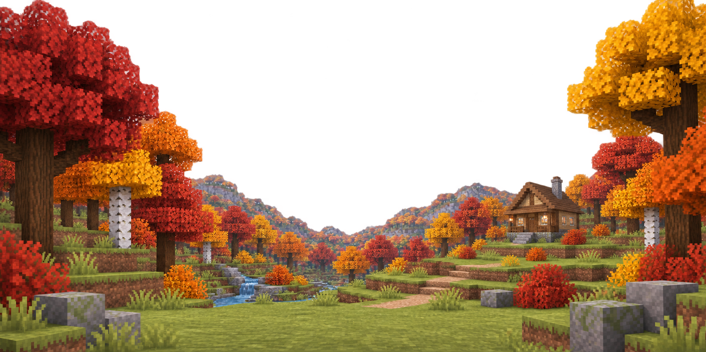
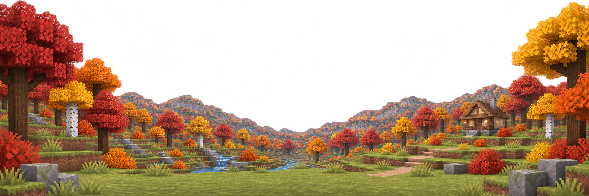

Fall wooded valley — composition proof
Isolated artwork only · neutral day · transparent sky · no runtime integration
Clean composition comparison
The mobile scene is the design master. Desktop preserves the world and landmark order while widening the valley and moving framing scenery outward.


Mobile master — 390px composition
Complete house, valley, foreground, distant depth, and sky remain visible beneath a transparent header.
Artwork ratio: 2:1 mobile master
Focal hierarchy: wooded valley first, retreat second
Header: overlays only the sky and outer treetops
Celestial: centered corridor; scenery naturally occludes sun/moon
Desktop expansion
The valley opens and major framing elements move outward without mirroring or changing landmark order.
Transparency inspection
Checkerboard confirms the sky is transparent and ready to sit above the independent sky and celestial layers.